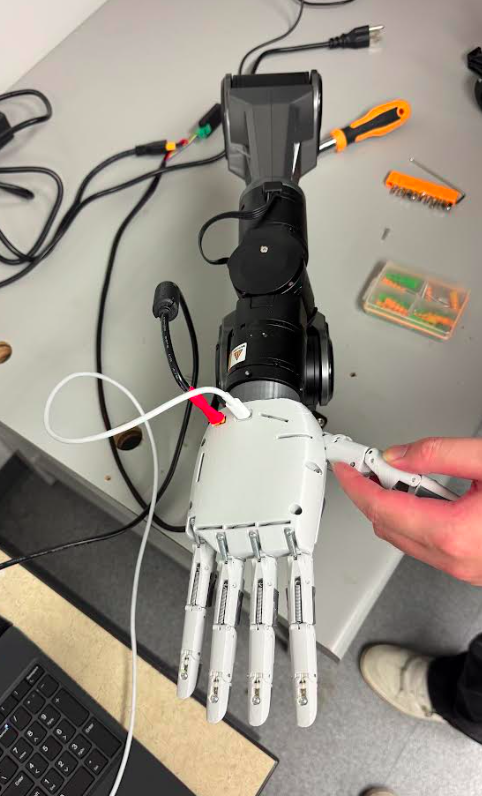
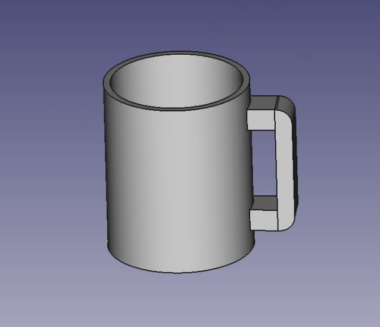
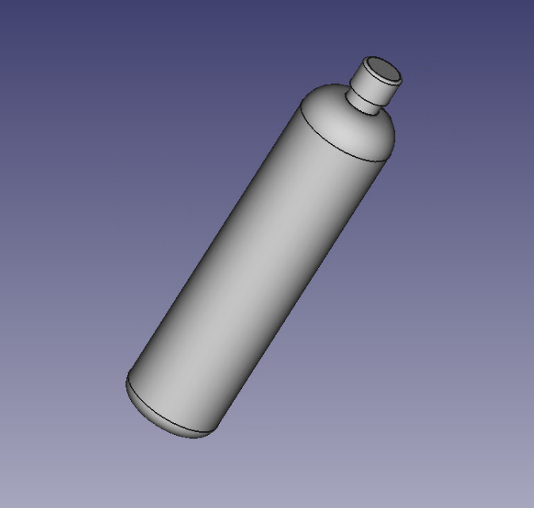
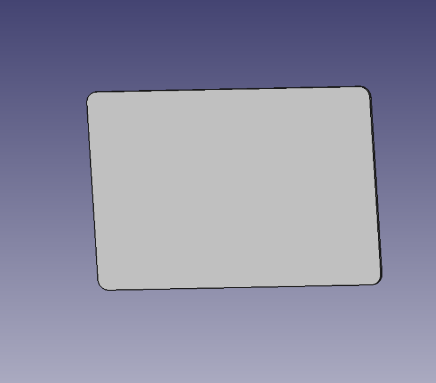
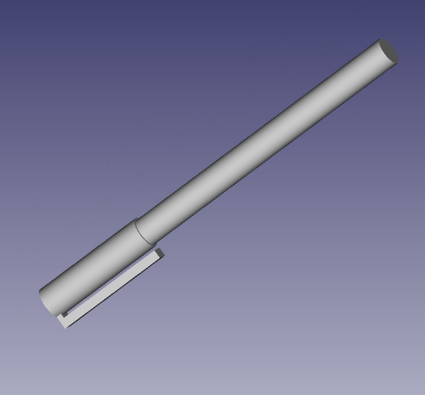

An Isaac Lab port of the TetherIA Aero Hand for grasp-and-hold tasks
Built & funded at the Human-Centered Autonomy Lab (HCA Lab)
The hand is rotated to face downward, and spawns closed around an object. The task is to hold that object against gravity for the full episode duration without dropping it.
Four objects are implemented currently: mug, bottle, card, and pen. Each lives in its own directory with its own object config and tuned grasp pose. The hand model, action space, observation layout, and reward structure are shared and identical between them.
The hand can be mounted on either the Agilex PiPER-X arm, or a sturdy table using custom 3D printed
mounts; all of which can be found in the mounts/ directory.

mounts/
7
tendon actuators (mirrors the real hand)
16
joints driven by those 7 actuators
68
observation dims
4
objects: mug, bottle, card, pen
60 Hz
sim policy
100 Hz
real hand
Note: The card and pen grasp poses still need work, since they don't hold their objects reliably in sim yet. Part of the reason is that a few of their tuned joint values sit outside the hand's own joint limits, so the pose being held doesn't match the pose that was tuned. Needs further tuning, or can train a policy to do this. See the object variants section for more information.
Each object gets its own directory containing a full copy of the same five files, with each having slight object-specific differences.
aero_hand_cfg.py
Hand asset, actuator gains, base pose and orientation. Byte-identical in all four directories.
<object>_cfg.py
One per object: USD path, mass, spawn position and rotation. Each also carries a commented-out "no gravity, no collision" variant for inspecting finger placement.
aero_hand_grasp_env.py
The DirectRLEnv: actions, observations, rewards, termination,
reset. Same file in every directory with the object's name swapped in.
test_sim.py
Holds the tuned grasp pose across N envs so you can eyeball the grip. No RL loop. Identical in all four, so the directory you run it from decides the object.
aero_hand_scene_cfg.py
A standalone hand-only scene (ground, light, N cloned hands). Currently unused, since nothing imports it and the env builds its own scene.
USD assets live in hand_model/, and printable mounting hardware (a PiPER wrist adapter and
a table clamp) in mounts/.
real_hand/Everything that talks to the physical hand lives here, and nothing else does. It's object-agnostic, so it sits at the top level instead of being copied into each object directory. No Isaac Lab imports here, and no ROS2 imports in the object directories.
real_hand/aero_hand_bridge.py
Wraps the hand in the same 7-actuator, radians convention the sim uses. It expands 7 actuator commands to 16 joint targets going out, and reconstructs 7 actuator and 16 joint values from raw motor feedback coming back.
real_hand/test_ros.py
A 25-second scripted demo: finger wave, counting, thumb opposition, slow clench. Doubles as an end-to-end hardware check.
Object scripts run from their own directory, so import the bridge like so:
import pathlib, sys
sys.path.insert(0, str(pathlib.Path(__file__).resolve().parent.parent / "real_hand"))
from aero_hand_bridge import AeroHandBridgeThe real hand has only 7 motors driving 16 joints through tendons, so it's under-actuated and many joints are mechanically forced to move together. The policy outputs 7 normalized values, one per actuator, and each is broadcast to every joint it drives:
right_thumb_cmc_abd_actthumb base abductionright_thumb_cmc_flex_actthumb base flexionright_thumb_tendon_actthumb mcp + ipright_index_tendon_actindex mcp + pip + dipright_middle_tendon_actmiddle mcp + pip + dipright_ring_tendon_actring mcp + pip + dipright_pinky_tendon_actpinky mcp + pip + dipThis mirrors TetherIA's "compact representation" from their SDK docs, implemented in Isaac Lab as a
broadcast matrix since PhysX doesn't model MuJoCo-style tendons. Each action is scaled from
[-1, 1] into that actuator's radian range, then copied to all of its joints, so the policy
physically cannot ask two joints in one group for different angles.
The reset pose (grasp_joint_pos) still sets all 16 joints individually, written straight
into the sim rather than pushed through the actuators. Only ongoing control during the episode goes
through the 7 actions.
Only the two thumb-base joints move independently. The other 14 fall into five clusters (thumb tip, index, middle, ring, pinky) where every joint is forced to the same angle. The grouping is fixed by the hand's mechanics, and only the angles being averaged change per object.
Pinch grasps (card, pen) want a bigger gap between mcp and pip/dip than power grasps (mug, bottle), since a pinch depends on independent fingertip placement, which is exactly the precision this coupling gives up. That's why the thin objects are the hard ones to tune by hand.
Caveat: This matches TetherIA's documented representation, but the real hardware's thumb coupling is more complex: moving one thumb actuator physically tugs on the others, non-linearly. That deeper coupling isn't reproduced on the sim side, and Isaac Lab doesn't simulate real tendons either, so this is an approximation of an approximation. Good enough to train a policy that speaks the same 7-number language as the real hand, not a physically exact cable model.
Same layout for every object; only the values coming from the loaded object differ.
Note: Joint torque is Isaac Lab's estimate from PD error, not a true measured
torque, which is fine as an observation but not as a calibrated sensor. And object position is
relative to the hand's articulation root (can be found by loading
hand_model/aero_hand.usda into Isaac Sim), not the palm or a fingertip.
Named after TetherIA's own CubeRotateZAxis example's reward terms, just adapted from the goal of "rotating as fast as possible" to "holding still without dropping". Two field names embed the object's name so they can be tuned per variant.
An episode ends early when the object sinks more than the drop threshold below its reset height, or after the full 10 seconds.
Held +5.0
Awarded every step the object hasn't dropped past the threshold.
Stillness -0.1
Scales with object speed, pushing toward a steady, non-wobbly grasp.
Action rate -0.01
Penalizes jerky changes in tendon commands between steps.
Pose -0.05
Pulls the 16-joint hand shape back toward its tuned grasp pose.
Torques & energy -1e-3
Penalize actuator effort and wasted mechanical power. Placeholder scales; verify against real torque magnitudes.
Drop penalty -10.0
Flat penalty every step the object counts as dropped.
The hand is fixed 1 m above the ground with fix_root_link, so only its joints move. Its
downward-facing rotation is set in aero_hand_cfg.py as a raw quaternion,
(0.173648, 0, 0.984807, 0) in (w, x, y, z) order, which is a 160° rotation
about +Y: a full downward flip, tilted 20° back toward the camera.
Worth checking: the inline comment on that line describes the rotation as 20° about
+X, which doesn't match the quaternion. The quaternion is what the sim uses. Nudging
it by eye also means editing four numbers at once, so converting it back to Euler degrees would
make that easier.
Each variant customizes its object config and its tuned grasp pose. Everything else is shared.
Mug
only_cup.usda · 0.371 kg · spawn
(-0.11, 0.0, 0.85), 15 cm below the hand root · power grasp, all five digits
Bottle
only_bottle.usda · 0.034 kg · spawn
(-0.12, -0.12, 0.94), rotated 180° · power grasp, all five digits
Card
only_credit_card.usda · 0.005 kg · spawn
(-0.115, -0.02, 0.92), rotated 180° · pinch grasp, thumb + index only
Pen
only_pen.usda · 0.010 kg · spawn
(-0.155, -0.024, 0.965), rotated 180° · pinch grasp, thumb + index only
The hand is currently unable to grasp onto the pen or card, as three tuned joint values sit outside the hand's own joint limits, so the 7 actuators can't reproduce them and only the direct reset write can. The grip therefore snaps to a different shape as soon as the first action is applied:
Must either bring these inside the limits, or allow a trained policy to find its own in-limit grip.




Possible future refactor: four near-identical env files could collapse into one generic env class fed by four small per-object configs, instead of four full copies.
cd mug # or bottle / card / pen
python test_sim.py # 100 envs (default)
python test_sim.py --num_envs 9 # fewer envs = faster reload while tuningRun from inside the object directory. The configs reference their USD assets as
../hand_model/..., relative to the working directory, so
python mug/test_sim.py from the repo root won't resolve them.
This goes through the real AeroHandGraspEnv, with the object included and actions pushed
through the actual tendon mapping, so what you see is the pose the actuators can actually
hold, not the 16-joint reset pose. Everything besides --num_envs
(--headless, --device, and so on) comes from Isaac Lab's
AppLauncher.
Every object variant is an ordinary Isaac Lab DirectRLEnv with 7 actions and 68
observations, so
it drops into whatever PPO setup you already use. There's no training script or Gym registration in the
repo; you instantiate the cfg and env directly, the way test_sim.py does.
Before training, check these:
_apply_action() in
aero_hand_grasp_env.py. It dumps the full control signal
for env 0 on every physics substep and forces a GPU - CPU sync each call.
stiffness and effort_limit_sim in aero_hand_cfg.py are
placeholders, never matched to the real servos.rew_scale_torques and rew_scale_energy are guesses; verify them
against logged torque magnitudes.aero_hand_bridge.py uses the same 7-actuator, radians convention and the same ordering the
sim policy outputs, so a sim action is directly sendable.
Requires ROS2 Humble, the aero-hand-open workspace built with colcon, and the
aero_open_sdk Python package.
The SDK needs a small patch to talk to the hand over USB. The hand is an ESP32-S3 where RTS drives the
reset line, and pyserial asserts both DTR and RTS on open, so the chip sits held in reset and every
command dies with ACK (opcode 0x31) not received. Opening with RTS already low isn't
enough; the chip has to see the reset released. Add a wake sequence to
AeroHand.__init__ before its first command:
self.ser.dtr, self.ser.rts = True, True
time.sleep(0.3)
self.ser.dtr, self.ser.rts = False, False # release EN, chip boots
time.sleep(0.3)
self.ser.dtr, self.ser.rts = True, False # run mode
time.sleep(1.0) # let it boot before talkingThe SDK also installs as a non-editable copy by default, so the patch won't be live until you reinstall it editable:
pip install -e /path/to/aero-hand-open/sdkros2 run aero_hand_open aero_hand_node --ros-args \
-p right_port:=auto -p control_space:=jointUse right_port:=auto, because the wake sequence makes the device re-enumerate and the port
number moves around. Only run one node at a time; a second instance resets the chip out from under the
first.
A FastDDS profile pointed at another machine will silently let you see, and command, that machine's hand instead of your own. Force local-only discovery:
unset FASTRTPS_DEFAULT_PROFILES_FILE
export ROS_LOCALHOST_ONLY=1
ros2 daemon stop # the daemon caches discovery configShell startup files only apply to newly opened terminals, so a stale terminal is the usual culprit if this stops working after being "fixed."
with AeroHandBridge() as hand:
hand.wait_for_feedback(timeout_sec=5.0)
hand.send_actuator_positions([0.0, 0.3, 0.35, 0.6, 0.6, 0.6, 0.6])
hand.spin_once(timeout_sec=0.0)
actuators = hand.get_actuator_feedback() # 7, radians, same space as the command
joints = hand.get_joint_feedback() # 16, radians, JOINT_NAMES order
motors = hand.get_motor_feedback() # 7, radians, raw hardware
speeds = hand.get_actuator_speed_feedback() # 7, RPM
currents = hand.get_actuator_current_feedback() # 7, mA, torque proxyGetters return None until the first message arrives. The bridge only initializes and shuts
down rclpy if it owns it, so it composes with an existing ROS2 node, and all reads are
mutex-guarded.
Travel limits, clamped silently by send_actuator_positions:
The hardware has no joint encoders. It reports only 7 raw motor angles, and the SDK's
get_joint_positions() is an unimplemented stub. The bridge mirrors the SDK's tendon model
locally and inverts it to recover actuator and joint values. Because the thumb tendons are
cross-coupled, that inverse is a triangular solve rather than a per-actuator scale factor. The bridge
asserts the matrix shape at startup and raises rather than returning quietly wrong angles.
Round-trip error against the SDK's forward model is 1.1e-16, but it's still a model
estimate, and tendon stretch or a finger physically blocked by the object are both invisible to it. For
real contact sensing use get_actuator_current_feedback().
Motor space and actuator space are not the same number: the finger tendon gain is about
2.476, so commanding 0.8 reads back 1.9592 in raw motor
radians. Compare against what you sent using get_actuator_feedback(). Expect 0.5 to 2%
tracking error on the fingers and up to about 0.056 rad on the thumb, which is ordinary servo and
tendon compliance rather than a units bug.
Sim and bridge use different coupling. Both map 7 actuators to 16 joints, but the sim broadcasts 1:1 to every joint in a group, while the bridge applies the hardware's real tendon ratios (1.0 at the mcp, 0.6 at pip and dip). The same 7 numbers therefore produce a differently shaped hand in sim than on hardware, with the fingertips curling less on the real hand. It's a known sim-to-real gap, and the first thing to check if a transferred policy grips differently than it did in sim.
Feedback measures a steady 100.01 Hz even while commanding at 800 Hz, so there's nothing to gain above
100 Hz. Align the 60 Hz sim with the hand before pushing a policy across, either with
decimation = 1 for 120 Hz or by dropping feedback_frequency to 60. Commanding
a 100 Hz hand at 60 Hz is otherwise fine, since commands latch until the next one arrives.
python3 real_hand/test_ros.pyAbout 25 seconds of finger wave, counting 1 to 5, rock on, thumbs up, thumb opposition, piano taps, and
a slow clench, streamed at 100 Hz with smoothstep easing rather than sent as step targets the servos
have to chase. Ctrl+C glides back to an open palm instead of freezing mid-pose. It prints
commanded vs. measured positions at the end. The pinch poses are geometric estimates, not measured, so
nudge them if a pinch misses on your unit.
USD asset fails to resolve
Script run from the repo root. The USD paths are
../hand_model/..., relative to the working directory, so cd into the
object directory first.
Object falls through the hand, or never falls at all
The "for testing" block in <object>_cfg.py is the
active one, which disables gravity and collision. This is currently the case for the pen.
Grip snaps to a different pose on the first step
The tuned pose collapses to an actuator target outside its limit and gets clamped. See Why the card and pen slip.
Console flooded with _apply_action() debug output
The debug block in _apply_action is still enabled. Delete it.
ACK (opcode 0x31) not received
Missing DTR/RTS wake sequence, or the SDK patch isn't actually live (non-editable install).
No feedback from hand, or topics listed but no data
A stale terminal still has the FastDDS unicast profile set. Open a new
shell and run ros2 daemon stop.
Node starts, then reads fail
Two nodes running. The second reset the chip, which re-enumerated to a new device path.
Feedback looks about 2.5× too big
Reading get_motor_feedback() where
get_actuator_feedback() was meant.
Motor matrix is not lower-triangular at startup
ACTUATOR_JOINT_MAP was edited into a shape the bridge's
inverse can't handle.
Hand cannot be detected after plugging in
Use a USB-C cable that supports data transfer, not just charging.